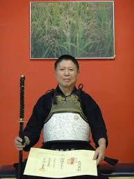

O Kendo (caminho da espada) é uma arte marcial japonesa baseada nas técnicas de esgrima usada pelos Samurais nos campos de batalha, na época do Japão feudal.
Nos treinos se utiliza a espada bokuto (espada de madeira) ou shinai (espada de bambu).
As vestimentas são o kendogi (kimono semelhante ao usado no karatê), o hakama (saia calça com pregas) e o bogu (armadura composta por quatro peças vestida sobre o kendogi e o hakama).
A prática do kendo não pode ser desassociada de sua tradição e caráter filosófico, por isso durante os treinos, espera-se que a pessoa aprenda a manejar a espada e ao mesmo tempo desenvolva seu caráter, discipline a mente, estimule a virtude e a cordialidade.

Nascido em Osaka (Japão), em 1943, Yasuichiro Hasegawa iniciou a prática de kendo aos 12 anos, sob orientação de seu pai Yasuo Hasegawa, que foi aluno de Takano Shigeyoshi, filho de Takano Sasaburo Sensei. Este último figura entre os mestres que padronizaram o Kendo Moderno.
Hasegawa chegou ao Brasil em 1967, e fixou residência inicialmente na cidade de Porto Alegre. Em 1975, mudou-se para Jundiaí e conheceu outros mestres que mantinham treinos constantes em São Paulo. Em 2014, foi graduado no 7º dan pela Confederação Japonesa de Kendo (Zennippon Kendo Renmei ou All Japan Kendo Federation) na cidade de Hanamaki-Shi Iwate (Japão). Ele competiu com mais de 580 inscritos para esta categoria em que apenas 68 foram aprovados.
Hasegawa Sensei treina alunos em Jundiaí e em Campinas. No auge de seus 73 anos, é um exemplo de dedicação e paciência, guiando seus discípulos no Caminho da Espada.